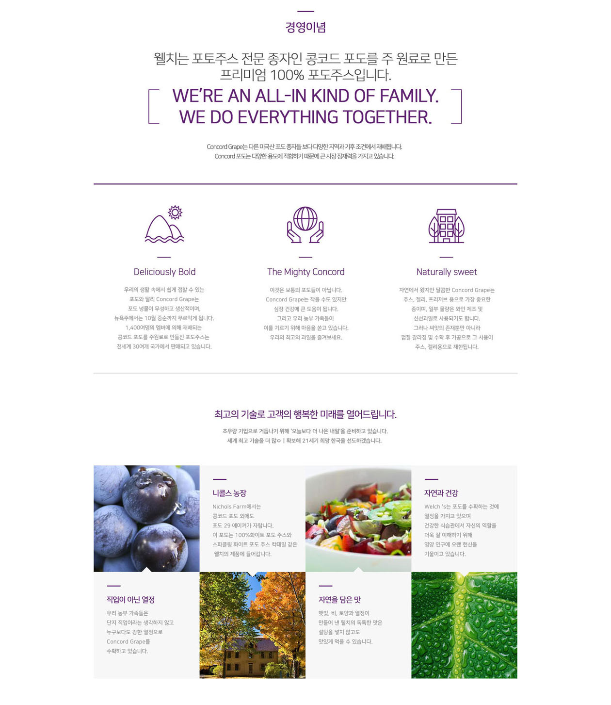
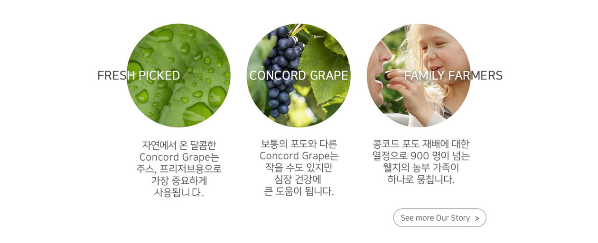

“PEOPLE WANT TO KNOW WHO GREW THEIR FOOD.
“PEOPLE WANT TO KNOW WHO GREW THEIR FOOD.
> Our Value > Management
> Our Value > Concept

The grapes used to make our 100% juice,
jelly and other Welch’s products are grown
on family farms in the United States. Concord
and Niagara grapes are picky about climate,
requiring just the right mix of sunshine,
rainfall and cool nights.
So Welch’s grows in four regions
that have the perfect climate
for the grapes to thrive.
“The grapes in our juice are proudly grown
by the farmer families who own Welch’s.
It makes a difference you can taste.
Because it’s got to be good enough
for our families to be good enough for yours.”